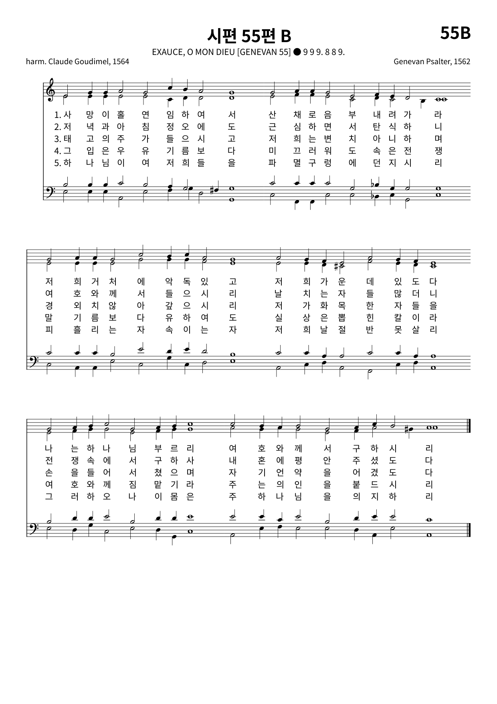

Psalm 55B
EXAUCE, O MON DIEU [GENEVAN 55] · 9 9 9. 8 8 9.
English title: Give Ear and Listen to My Pleading
Tune: Genevan Psalter, 1562 · Harmony: Claude Goudimel, 1564 · Lyrics: Korean adaptation of Psalm 55 from the Korean Revised Version (AI draft adaptation · not yet theologically reviewed) · 5 stanzas
Psalm 55 is divided into 2 tunes: A B · This tune contains stanzas 7–11 of the Psalm 55 lyrics.
Score PDF MusicXML (for printing) MusicXML (for accompaniment, with prelude and repeats) Read Psalm 55 (Korean Revised Version)
Score
← Psalm 55A ListAccompaniment (in preparation)Psalm 56 →
Lyrics (Korean)
Stanza 1 (Ps. 15~16절)
사망이 홀연 임하여서
산 채로 음부 내려가라
저희 거처에 악독 있고
저희 가운데 있도다
나는 하나님 부르리
여호와께서 구하시리
사망이 홀연 임하여서
산 채로 음부 내려가라
저희 거처에 악독 있고
저희 가운데 있도다
나는 하나님 부르리
여호와께서 구하시리
Stanza 2 (Ps. 17~18절)
저녁과 아침 정오에도
근심하면서 탄식하니
여호와께서 들으시리
날 치는 자들 많더니
전쟁 속에서 구하사
내 혼에 평안 주셨도다
저녁과 아침 정오에도
근심하면서 탄식하니
여호와께서 들으시리
날 치는 자들 많더니
전쟁 속에서 구하사
내 혼에 평안 주셨도다
Stanza 3 (Ps. 19~20절)
태고의 주가 들으시고
저희는 변치 아니하며
경외치 않아 갚으시리
저가 화목한 자들을
손을 들어서 쳤으며
자기 언약을 어겼도다
태고의 주가 들으시고
저희는 변치 아니하며
경외치 않아 갚으시리
저가 화목한 자들을
손을 들어서 쳤으며
자기 언약을 어겼도다
Stanza 4 (Ps. 21~22절)
그 입은 우유 기름보다
미끄러워도 속은 전쟁
말 기름보다 유하여도
실상은 뽑힌 칼이라
여호와께 짐 맡기라
주는 의인을 붙드시리
그 입은 우유 기름보다
미끄러워도 속은 전쟁
말 기름보다 유하여도
실상은 뽑힌 칼이라
여호와께 짐 맡기라
주는 의인을 붙드시리
Stanza 5 (Ps. 23절)
하나님이여 저희들을
파멸 구렁에 던지시리
피 흘리는 자 속이는 자
저희 날 절반 못 살리
그러하오나 이 몸은
주 하나님을 의지하리
하나님이여 저희들을
파멸 구렁에 던지시리
피 흘리는 자 속이는 자
저희 날 절반 못 살리
그러하오나 이 몸은
주 하나님을 의지하리